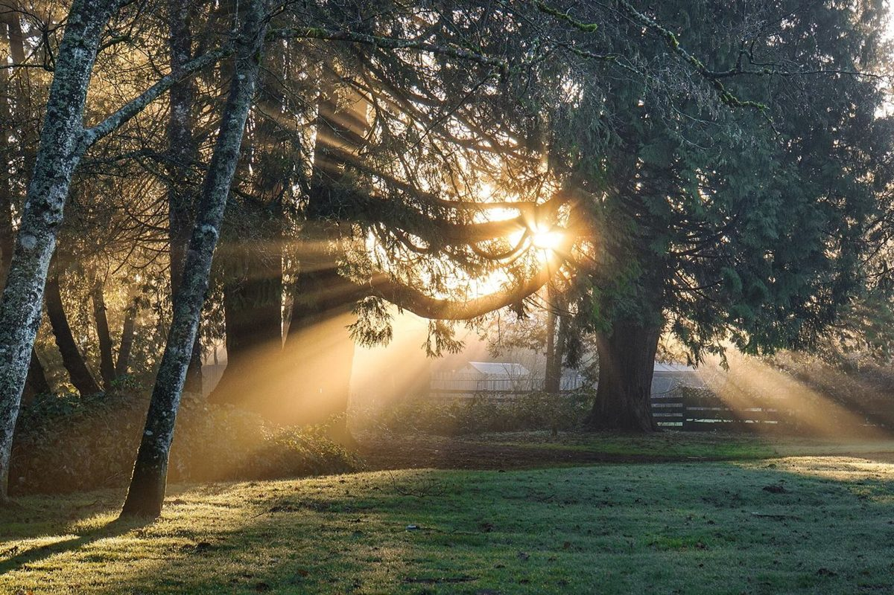
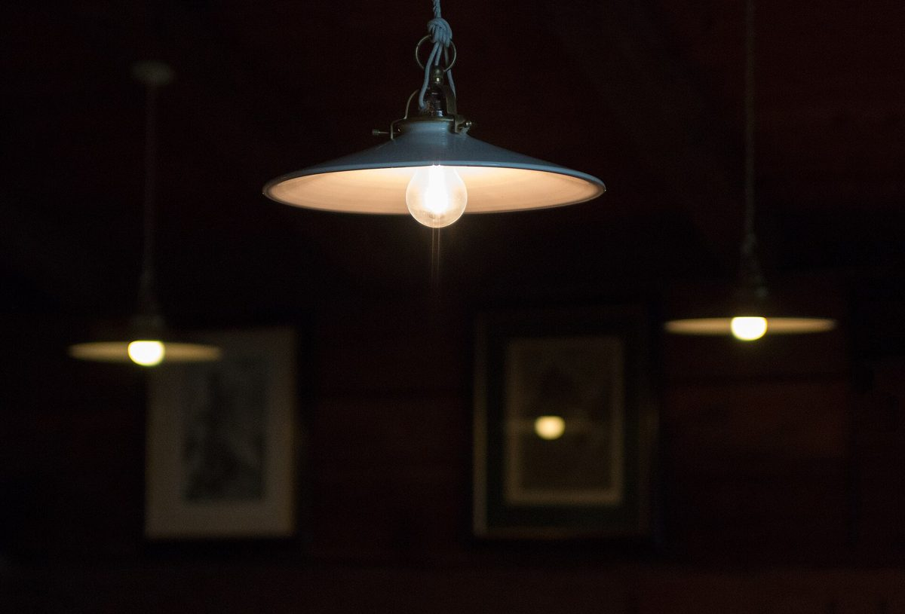

三行日記
カフェ / 三重県津市
NIKKI
COFFEE
SPACE
三重県津市長岡町にあるカフェ「NIKKI COFFEE SPACE」のご案内ページです。営業時間やメニューなど、詳しいことは準備中。いまはInstagramで様子をご覧ください。

制作側の連想
「NIKKI」から、三行日記
店名の由来は分かりません。制作側は「NIKKI」という響きから、日記帳を連想しました。そこでこのサイトは、罫線の入った日記の一頁のように、ひと日を「朝・昼・夜」の三行で書きとめる作りにしています。お店の理念や由来とは無関係の、制作側の連想です。
ひと日を三行で(イメージ)
朝・昼・夜の一行ずつ
写真は津市の風景ではなく、時間帯のイメージで選んだ国外・撮影地不明のフリー素材です。下の一行はすべて制作側の想像で、お店の実際の様子ではありません。
- 1行目
朝
木もれ日のなかで、ひと日がはじまる。

国外のイメージ(北米) - 2行目
昼
窓辺で、湯気の立つカップをひと休み。

撮影地不明のイメージ - 3行目
夜
あかりの下で、きょうの出来事を書きとめる。

撮影地不明のイメージ
貼り込み写真
頁のすみに、カップを四つ。
日記に写真を貼るように並べました。国外・撮影地不明のフリー素材で、お店で提供しているものではありません。


ご案内
お店のこと(確認できたものだけ)
| 所在地 | 三重県津市長岡町3060-2 |
|---|---|
| 電話 | なし |
| 営業時間 | 準備中 |
| 定休日 | 準備中 |
| ご予約 | 準備中 |
| 駐車場 | 準備中 |
| SNS | Instagram @nikki_coffee_space |